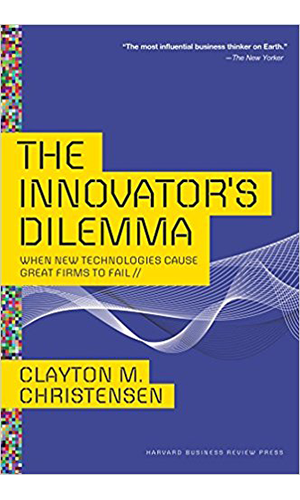
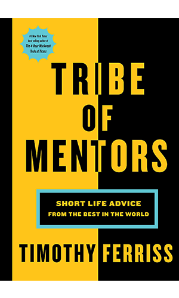
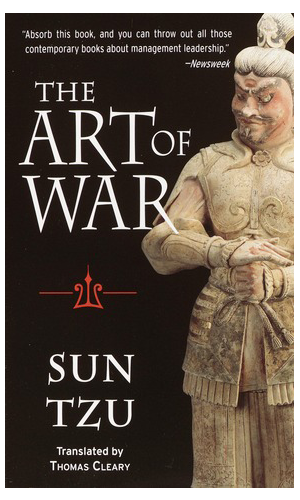
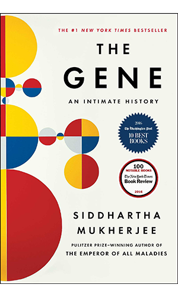
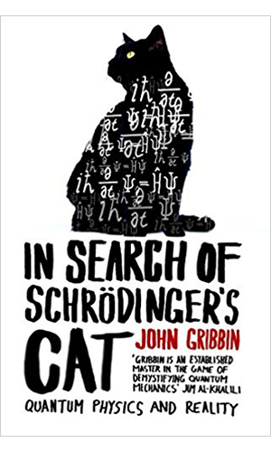
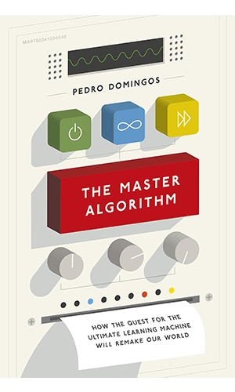
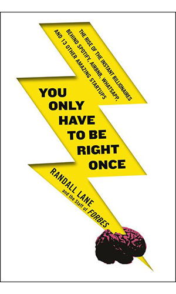

JM

Books
JM
After visiting many other people's websites (for example: Patrick Collison's Bookshelf) and seeing webpages on bookshelves, I decided to create my own version here and share with you some of the books on my bookshelf.
I currently haven't read all of these books but I'm sure I will have in the near future. You can scroll to the bottom of the list to see my top 5 favourite books.
Books with the icon beside them are books that I thought were particularly good.
Elon Musk: Tesla, SpaceX, and the Quest for a Fantastic Future
Shoe Dog: A Memoir by the Creator of NIKE
The Everything Store: Jeff Bezos and the Age of Amazon
The Airbnb Story: How Three Guys Disrupted an Industry, Made Billions of Dollars … and Plenty of Enemies
The Facebook Effect: The Real Inside Story of Mark Zuckerberg and the World's Fastest Growing Company
The Accidental Billionaires: Sex, Money, Betrayal and the Founding of Facebook
Hatching Twitter: A True Story of Money, Power, Friendship and Betrayal
Steve Jobs: The Exclusive Biography
Becoming Steve Jobs: The evolution of a reckless upstart into a visionary leader
You Only Have To Be Right Once: The Rise of the Instant Billionaires Behind Spotify, Airbnb, WhatsApp, and 13 Other Amazing Startups
Good To Great: Why Some Companies Make the Leap... and Others Don't
The Innovator's Dilemma: When New Technologies Cause Great Firms to Fail (Management of Innovation and Change)
Crush It!: Why NOW Is the Time to Cash In on Your Passion
The Art of Startup Fundraising: Pitching Investors, Negotiating the Deal, and Everything Else Entrepreneurs Need to Know
How to Win Friends and Influence People
The Hard Thing About Hard Things: Building a Business When There Are No Easy Answers
Tools of Titans: The Tactics, Routines, and Habits of Billionaires, Icons, and World-Class Performers
Tribe of Mentors: Short Life Advice from the Best in the World
Start With Why: How Great Leaders Inspire Everyone To Take Action
Zero to One: Notes on Start Ups, or How to Build the Future
The Self-Made Billionaire Effect: How Extreme Producers Create Massive Value
The Lean Startup: How Constant Innovation Creates Radically Successful Businesses
Jack Ma, Alibaba and the 40 Thieves of Success
Bill Gates: The Life and Business Lessons of Bill Gates
Warren Buffett: The Life and Business Lessons of Warren Buffett
Awaken The Giant Within: How to Take Immediate Control of Your Mental, Emotional, Physical and Financial Life
The Gene: An Intimate History
Sapiens: A Brief History of Humankind
Homo Deus: A Brief History of Tomorrow
The Power of Habit: Why We Do What We Do, and How to Change
Are You Smart Enough to Work at Google?: Fiendish Puzzles And Impossible Interview Questions From The World'S Top Companies
Outliers: The Story of Success
In Search Of Schrodinger's Cat: Quantum Physics and Reality
A Brief History Of Time: From Big Bang To Black Holes
Seven Brief Lessons on Physics
Relativity: The Special and the General Theory
The New Turing Omnibus: Sixty-Six Excursions in Computer Science
Turing's Cathedral: The Origins of the Digital Universe
Machine Learning: The New AI (The MIT Press Essential Knowledge Series)
Computing with Quantum Cats: From Colossus to Qubits
The Master Algorithm: How the Quest for the Ultimate Learning Machine Will Remake Our World
Algorithms to Live By: The Computer Science of Human Decisions
Black Hat Python: Python Programming for Hackers and Pentesters
Two Scoops of Django: Best Practices for Django 1.8
The Hitchhiker's Guide to the Galaxy
For just now that's all of the books on my bookshelf but I will make sure to update this every so often.
Top 5 Favourite Books.
The following books are my current - this list will probably change in the future - top 5 favourite books in no particular order.
Steve Jobs: The Exclusive Biography
The Hard Thing About Hard Things: Building a Business When There Are No Easy Answers
You Only Have To Be Right Once: The Rise of the Instant Billionaires Behind Spotify, Airbnb, WhatsApp, and 13 Other Amazing Startups
Elon Musk: Tesla, SpaceX, and the Quest for a Fantastic Future
The Master Algorithm: How the Quest for the Ultimate Learning Machine Will Remake Our World